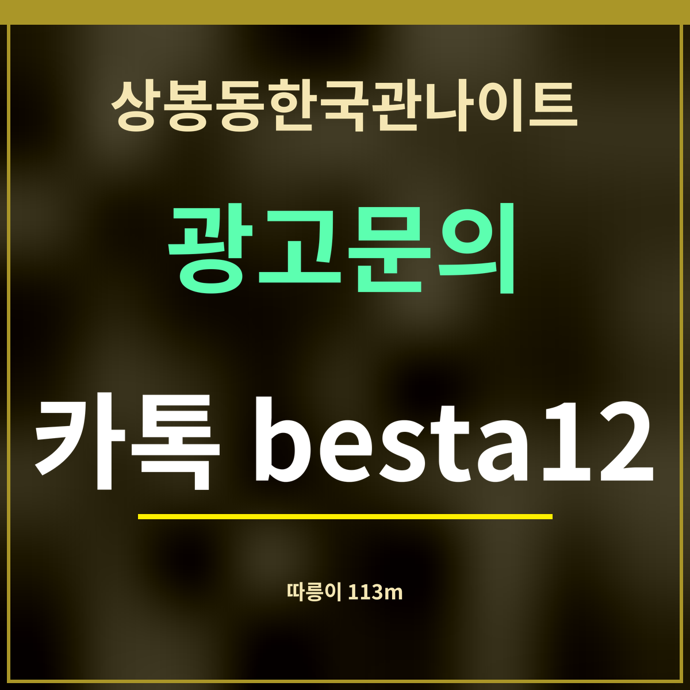

19세 미만 출입 금지
상봉동한국관나이트 따릉이 대여소 위치, 113m부터 8곳
제휴 없는 정보 안내 · 대여소 위치는 9월 27일 카카오맵 검색 결과이고, 대여소마다 남은 자전거 수는 이 쪽에 싣지 않았습니다.

바로 답: 상봉동한국관나이트 둘레 120m 안에 따릉이 대여소가 두 곳 있습니다. 방정환교육지원센터 옆 대여소 113m, 코스트코 상봉점 대여소 116m입니다.
가까운 순서 8곳
| 대여소 | 주소 | 직선거리 |
|---|---|---|
| 방정환교육지원센터 옆 대여소 | 상봉동 184-2 | 113m |
| 코스트코 상봉점 대여소 | 상봉동 160-3 | 116m |
| 상봉역 2번 출구 대여소 | 망우로 297 | 249m |
| 상봉역 1번출구 대여소 | 상봉동 160-4 | 250m |
| 상봉역 3번출구 대여소 | 상봉동 102-122 | 293m |
| 상봉터미널2 대여소 | 망우동 534-58 | 395m |
| 상봉시장앞 교차로 한성빌딩 앞 대여소 | 면목로 456 | 503m |
| 동일로 지하차도 대여소 | 중화동 207 | 778m |
이 대여소들이 쓸모 있는 때
상봉역 1·2·3번 출구 앞에도 대여소가 있어(250m 안팎), 역에서 자전거를 빌려 가게 근처에 반납하거나 그 반대로 할 수 있습니다. 상봉터미널 쪽(395m)과 상봉시장 앞 교차로(503m)에도 있어 동네 안에서 짧게 움직이기 좋습니다.
술을 마신 뒤에는 자전거도 타지 않는 것이 안전합니다. 따릉이는 가게에 가기 전, 맑은 정신일 때 쓰는 이동 수단으로만 생각하세요. 대여소마다 남은 자전거 수는 따릉이 앱에서 볼 수 있습니다.
반납할 때는 빌린 곳이 아니어도 됩니다. 목록의 여덟 곳 가운데 어디든 비어 있는 거치대에 세우고 앱에서 반납이 끝났는지 확인하세요.
자주 묻는 것
가장 가까운 따릉이 대여소는요?
방정환교육지원센터 옆 대여소(상봉동 184-2)로 직선 113m입니다.
방정환교육지원센터 옆 대여소(상봉동 184-2)로 직선 113m입니다.
상봉역 출구 앞에도 있나요?
1번 출구(250m), 2번 출구(249m), 3번 출구(293m) 대여소가 있습니다.
1번 출구(250m), 2번 출구(249m), 3번 출구(293m) 대여소가 있습니다.
남은 자전거 수는 어디서 보나요?
대여소마다 남은 자전거 수는 따릉이 앱에서 볼 수 있습니다.
대여소마다 남은 자전거 수는 따릉이 앱에서 볼 수 있습니다.
한 줄 정리: 상봉동한국관나이트 옆 113m·116m에 따릉이 대여소 — 맑은 정신일 때 타세요.